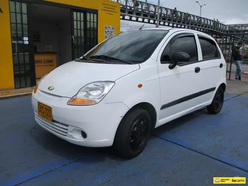
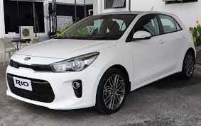
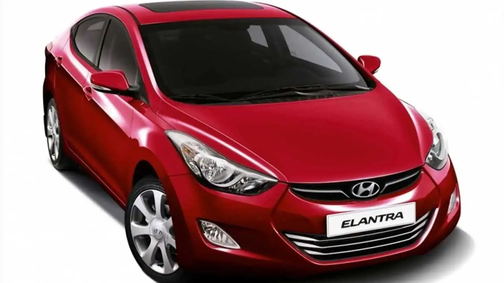
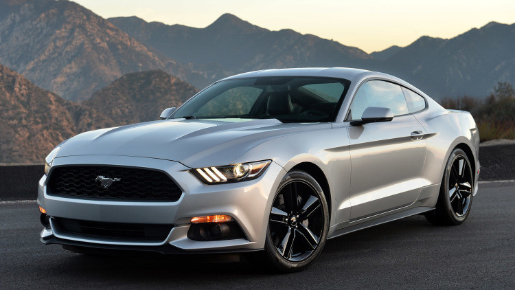

top 5
Chevrolet Spark
Precio Aproximado: $12,000 - $15,000 USD

El Chevrolet Spark es uno de los autos más accesibles en el mercado. Es un hatchback compacto con un diseño simple, pero práctico, ideal para la ciudad. Ofrece un buen ahorro de combustible y un costo de mantenimiento bajo, lo que lo hace atractivo para quienes buscan un vehículo económico y confiable.
comprar: https://carros.tucarro.com
top 4
Kia Rio
Precio Aproximado: $16,000 - $20,000 USD

El Kia Rio es un sedán compacto que ofrece un equilibrio excelente entre costo y características. Viene equipado con tecnología moderna, buen espacio interior, y una garantía extensa. Su motor eficiente y su manejo ágil lo hacen una opción sólida para quienes buscan un auto accesible pero bien equipado.
comprar: https://carros.tucarro.com
top 3
Hyundai Elantra
Precio Aproximado: $20,000 - $25,000 USD

El Hyundai Elantra es un sedán compacto con un diseño moderno y una buena cantidad de características estándar. Ofrece una conducción cómoda, eficiencia en el consumo de combustible y una buena calidad de construcción, posicionándose como una excelente opción para aquellos que buscan más comodidad y tecnología sin gastar mucho.
comprar: https://carros.tucarro.com
top 2
Mazda 3
Precio Aproximado: $23,000 - $27,000 USD

El Mazda 3 es conocido por su diseño elegante, su interior de alta calidad y su experiencia de conducción deportiva. A pesar de ser más caro que los anteriores, sigue siendo accesible y ofrece un valor excepcional con un enfoque en la calidad y el desempeño. Es ideal para quienes buscan un coche que sea tanto práctico como divertido de conducir.
comprar: https://carros.tucarro.com
top 1
Ford Mustang EcoBoost
Precio Aproximado: $23,000 - $27,000 USD

El Ford Mustang EcoBoost es una de las opciones deportivas más accesibles en el mercado. Viene con un motor turboalimentado de 4 cilindros que ofrece una buena combinación de potencia y eficiencia. Aunque es el más caro de esta lista, ofrece una experiencia de manejo emocionante, diseño icónico y prestaciones deportivas, todo a un precio relativamente asequible comparado con otros deportivos. El Ford Mustang EcoBoost es una de las opciones deportivas más accesibles en el mercado. Viene con un motor turboalimentado de 4 cilindros que ofrece una buena combinación de potencia y eficiencia. Aunque es el más caro de esta lista, ofrece una experiencia de manejo emocionante, diseño icónico y prestaciones deportivas, todo a un precio relativamente asequible comparado con otros deportivos.
comprar: https://carros.tucarro.com